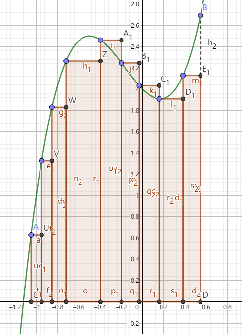
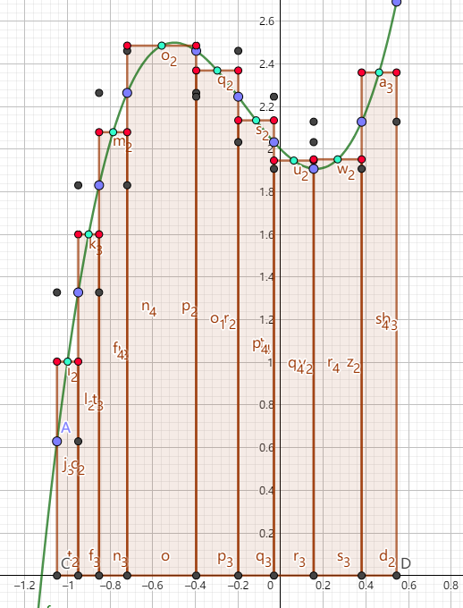
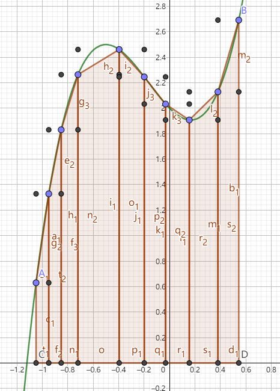
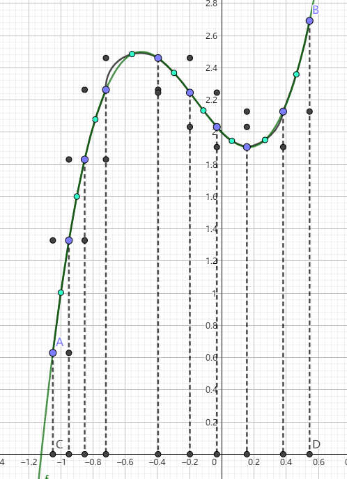

一种经典的数值积分算法
老文章, 可能有很多错误, 懒得修了
2020.10.06 upd: 我重写了一篇介绍自适应Simpson算法的文章, 讲解更加清晰 链接
求面积诸法
Simpson法是一种经典的数值积分方法, 一个重要应用就是求不规则图形面积
说到不规则图形, 我们往往都是先从曲边梯形开始
曲边梯形ABCD就是下图中曲线AB、线段AC、CD、DB围成的图形, 我们想要求出它的面积

一个简单而直接的解决方案是: 把曲边梯形分成n段, 每一段用一些规则的几何图形去近似, 然后累加每一段的面积, 这样我们就得出结果了
可以看出, 上述过程的关键就是选择什么样的几何图形去近似
当然, 用不同的几何图形近似, 效果是不同的
用矩形去近似
大致这样

我们可以看出这种近似方法太粗糙了, 针对用矩形近似的方案, 我们可以做一些优化:
对于每一段, 我们取端点中点在函数上的对应点, 借助这个点来构造矩形:

这样看起来就舒服多了, 但感觉还是有些粗糙, 有没有更好的方法呢?
当然有了!
不过在继续之前, 我们先来看看如何实现这种方法
设C(a,0), D(b,0)
那么
∫abf(x)dx≈Δxii=1∑n−1f((i+21)Δxi)
为了方便, 我们让每一段的长度相等, 即对于每一段, 均有
Δx=nb−a
那么
∫abf(x)dx≈Δxi=1∑n−1f((i+21)Δx)
用梯形去近似
大致这样

易知此法和上述的结果是一样的, 不过此法视觉效果好
有一些部分看起来已经足够精确了, 但感觉还是有些粗糙, 有没有更好的方法呢?
当然有了!
不过在继续之前, 我们还是先来看看如何实现这种方法
设C(a,0), D(b,0)
那么
∫abf(x)dx≈Δxi(i=1∑n−1f(iΔxi)+2f(a)+f(b))
为了方便, 我们让每一段的长度相等, 即对于每一段, 均有
Δx=nb−a
则
∫abf(x)dx≈Δx(i=1∑n−1f(iΔx)+2f(a)+f(b))
Simpson法
进入正题
Simpson法是先将原曲线近似成一段段抛物线, 然后再用Newton-Leibniz公式求每一段的面积

(因为笔者在GeoGebra里没找到根据三点画抛物线的工具, 所以这里用圆弧代替了QwQ)
可以看出, 此法效果相当不错
我们来看看如何实现
设C(a,0), D(b,0)
为了方便, 我们让每一段的长度相等, 即对于每一段, 均有
Δx=nb−a
对于每一段区间, 我们如下处理:
设起点为x2i−2, 中点为x2i−1, 终点为x2i
我们要用过点(x2i−2,f(x2i−2)), (x2i−1,f(x2i−1)), (x2i,f(x2i))的抛物线g(x)=Ax2+Bx+C来取代f(x)
有
⎩⎪⎪⎨⎪⎪⎧f(x2i−2)f(x2i−1)f(x2i)=g(x2i−2)=g(x2i−1)=g(x2i)
于是
∫x2i−2x2if(x)dx≈∫x2i−2x2ig(x)dx=(3Ax3+2Bx2+Cx)∣∣∣∣x2i−2x2i=3Δx[f(x2i−2)+4f(x2i−1)+f(x2i)]
故
∫abf(x)dx≈3Δxi=0∑2n−2[f(x2i)+4f(x2i+1)+f(x2i+2)]
一部分资料认为Simpson法只用一段抛物线替代, 即
∫abf(x)dx≈6b−a[f(a)+4f(2a+b)+f(b)]
下称此情况为三点Simpson法
自适应Simpson法
自适应Simpson法就是对Simpson法的一个优化
对一段区间[a,b], 我们做如下操作
- 取中点mid=2a+b
- 分别对区间[a,b]、区间[a,mid]、区间[mid,b]应用三点Simpson法, 设得到的面积分别为S0、S1、S2
- 若S0与S1+S2差别不大, 就认为区间[a,b]面积的近似值已经求得, 否则分别对区间[a,mid]、区间[mid,b]递归应用本操作
可以看出这个方法在保证了精度的同时保证了效率
我们注意到, 上述操作中有两个地方含糊不清
一个是如何确定“差别不大”, 一个是面积的近似值已经求得后返回的面积是多少
我们认为当且仅当∣S1+S2−S0∣<15ϵ时S0与S1+S2差别不大
乘以15是经过一系列误差分析后得出的, 具体笔者可能会另写一篇文章咕咕咕, 感谢@Marser和@_rqy两位dalao的补充
返回的面积则是S1+S2+15S1+S2−S0
附程序:
1
2
3
4
5
6
7
8
9
10
11
12
13
14
15
16
17
| double F(double num) {
}
double simpson(double a, double b) {
double c = a + (b - a) / 2;
return (F(a) + 4 * F(c) + F(b)) * (b - a) / 6;
}
double asr(double a, double b, double eps, double S) {
double c = a + (b - a) / 2,
lS = simpson(a, c), rS = simpson(c, b);
if (fabs(lS + rS - S) <= 15 * eps)
return lS + rS + (lS + rS - S) / 15.0;
return asr(a, c, eps / 2, lS) + asr(c, b, eps / 2, rS);
}
|
后记
这篇文章笔者写了4h吧, 内容还算简单, 希望各位能够愉快地享用(￣▽￣)*
btw, 洛谷P4525、P4526是模板题ヾ(≧▽≦*)连切两道紫题真开心
主要参考书目
- 刘汝佳, 陈锋. 算法竞赛入门经典——训练指南. 北京: 清华大学出版社, 2012